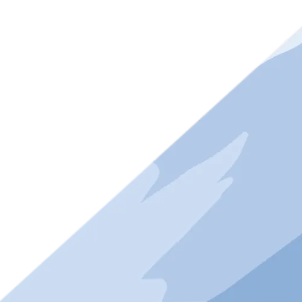
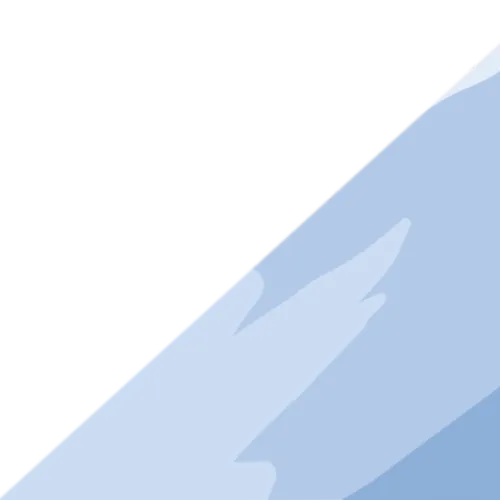

Looking for a web developer? Just want to say hello?
Connect with me
on LinkedIn.
Or get in touch with me over email here!
Rathaus Studio is a queer-run art collective, based in Rochester, NY. I redesigned its Squarespace site to better reflect their aims, and incorporated an artsy old-web aesthetic.
Check out Rathaus Studio here!
A Rat Game is a short RPG, about being turned into a rat by your next door neighbor. The game was made in React, yet it fetches dialogue from OpenAI (the creator of ChatGPT!).
Check out A Rat Game here!
This portfolio for my short stories and art—now over two years old—was one of the first websites I developed. Looking back, there are both parts that I'm proud of and parts I would change.
Check out the portfolio here!
SAPIEN is a tech start-up company, that offers virtual avatars for conversations and skills training. The company needed a sharp, professional front-end within a week to match the back-end they had created.
Check out SAPIEN's site here!
Tools Used: Squarespace, Custom CSS, HTML and JavaScript for the Interactive Components
Knowledge Gained: the inner workings of Squarespace, balancing artistic expression with usability, imposter syndrome is fake.
Rathaus Studio is a queer-run art collective, based in Rochester, NY, that specializes in risograph
printing. The organization's Squarespace site is redesigned to better reflect that mission, and the
materiality of its primary medium: paper and ink.
The studio layout on the landing page allows newcomers a means intuitive exploration of what the site has to offer, while the traditional hamburger menu at the top of the page provides quick access to important links.
Tools Used: React, CSS, JavaScript, and HTML
Knowledge Gained: Fetching content via API, organizing a complicated program into self-contained modules.
A Rat Game is a short RPG, developed out of morbid curiosity as both an author and programmer on
how
close AI is to taking writing jobs. The game was developed in React, yet it fetches narrative content
from
OpenAI (that’s the creator of ChatGPT).
As for my findings?
The task of setting up data fetching from a Large Language Model is not
prohibitively hard, and the pricing is relatively low for a single app.
However, for large projects, such as video games, because that cost is multiplied by every user who
fetches dialogue through the app, because the response is unpredictable, and because a writer remains
necessary to create the prompts, that the option is not sustainable.
For now, at least, LLMs
cannot
replace writers.
Tools Used: Flask, Bootstrap, CSS, HTML
Knowledge Gained: how to use small visual details to tie a site together thematically, keeping the unique feel of a site, with tighter constraints than other projects.
This portfolio for my short stories and art—now over two years old—was one of the first websites I
developed.
Because my experience at the time was still limited, I decided to develop a relatively simple site and
direct
my efforts on perfecting the UI details.
Though I’m satisfied with the visuals—this still was one of my first projects. So, what would I do better next time?
1. Mobile Responsiveness: The portfolio technically is mobile responsive, but the landing page and game development pages especially don’t measure up to my personal standards. In a redesign, I would focus on this, since I know that most use mobile devices to visit a portfolio.
2. Image and Text Modals: As of now, clicking on my work takes a visitor to a tab that displays the PDF/PNG file. It’s functional but a less disruptive technique would be to use a modal to allow a visitor to examine the work without leaving the portfolio page—another thing for that redesign.
3. More Excitement! As much as I do like the
tranquil color palette, any redesign of the
portfolio should communicate the passion that went into it. That would mean using brighter colors,
and energetic, even bouncy CSS animations. I'd also develop a interactive layout that brings visitors
into the creative process with me: a crowded desk, for example, with an art tablet and journals that
link to the relevant portfolio pages.

Tools Used: Flask, CSS, HTML, JavaScript
Knowledge Gained: Incorporating front-end changes to an already-developed backend app, designing for mobile users, working under tight deadlines.
SAPIEN is a tech start-up company, based on designing virtual avatars for conversations and skills
training.
The company needed a sharp, professional front-end within a week to match the back-end they were in the
process of creating.
The site’s front-end was developed in a clean gray and white, to make elements pop, while the rounded corners on elements prevented it from feeling too intimidating. Filtering elements were also incorporated in the avatar gallery and for the feedback page responses.

 

Looking for a web developer? Just want to say hello?
Connect with me
on LinkedIn.
Or get in touch with me over email here!